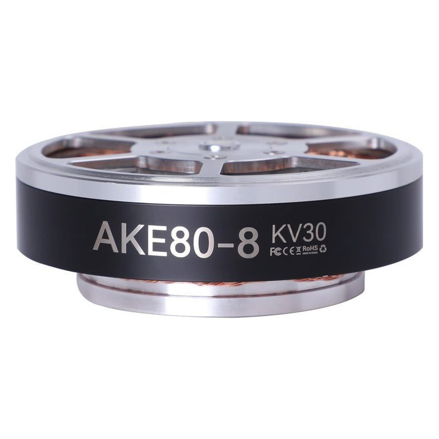

AKE Series. 12 N·m rated, 30 N·m peak, Ф87 mm, 570 g, 8:1 reduction, 48 V.
US$381.00
12 N·m rated and 30 N·m peak from a Ф87 x 32 mm, 570 g frame, geared 8:1, on 48 V. Kv 30, 150 RPM rated and 195 RPM no-load. CubeMars lists it for exoskeletons.
CubeMars' AKE Quasi Direct Drive is the ideal choice for the industrial automation and robotics.
| Reduction Ratio | 8:1 |
|---|---|
| Rated Torque (N·m) | 12 |
| OD (mm) | 87 |
| Weight (g) | 570 |
| Peak Torque (N·m) | 30 |
| Rated Voltage (V) | 48 |
| Rated Speed (RPM) | 150 |
| No-Load Speed (RPM) | 195 |
| Rated Current (A) | 4.8 |
| Peak Current (A) | 12 |
| Maximum Torque Weight Ratio (N·m/kg) | 52 |
| Height (mm) | 32 |
| Kv (RPM/V) | 30 |
| Kt (N·m/A) | 0.32 |
| Ke (V/kRPM) | 33 |
| Phase to Phase Resistance (mΩ) | 870 |
| Phase to Phase Inductance (μH) | 990 |
| Mechanical Time Constant (ms) | 2.3 |
| Electrical Time Constant (ms) | 1.13 |
| Pole Pairs | 21 Inertia (g·cm²） 143 |
| Winding Type | Star |
| Operation Ambient Temperature | (℃) -20℃~50℃ |
| Driving Way | FOC |
| Application | Exoskeleton |